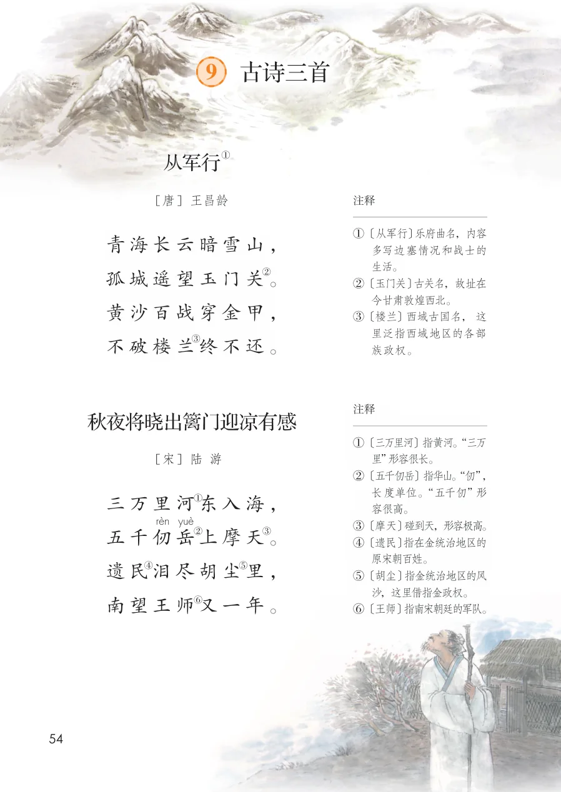
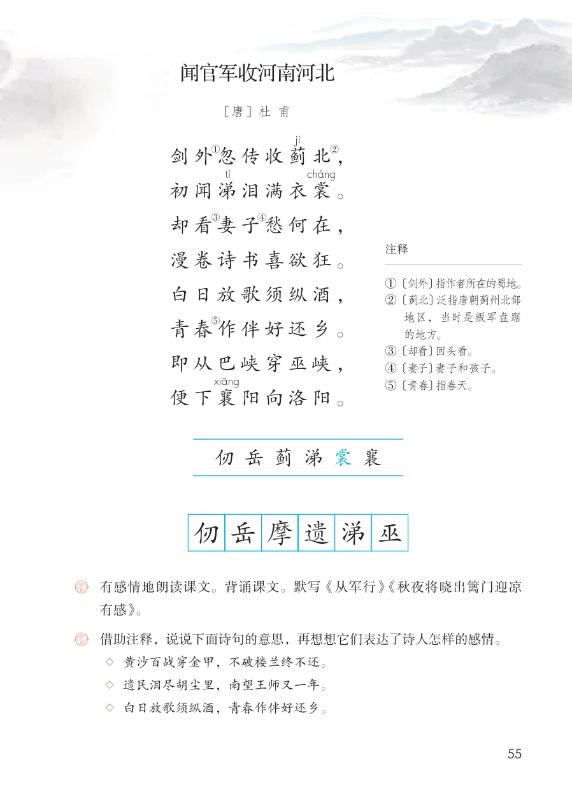

展开章节菜单
课本第 54 页
9 古诗三首
从军行
青海长云暗雪山，
孤城遥望玉门关。
黄沙百战穿金甲，
不破楼兰终不还。
注释
①〔从军行〕乐府曲名，内容多写边塞情况和战士的生活。
②〔玉门关〕古关名，故址在今甘肃敦煌西北。
③〔楼兰〕西域古国名，这里泛指西域地区的各部族政权。
②〔玉门关〕古关名，故址在今甘肃敦煌西北。
③〔楼兰〕西域古国名，这里泛指西域地区的各部族政权。
秋夜将晓出篱门迎凉有感
三万里河东入海，
五千仞岳上摩天。
遗民泪尽胡尘里，
南望王师又一年。
注释
①〔三万里河〕指黄河。“三万里”形容很长。
②〔五千仞岳〕指华山。“仞”，长度单位。“五千仞”形容很高。
③〔摩天〕碰到天，形容极高。
④〔遗民〕指在金统治地区的原宋朝百姓。
⑤〔胡尘〕指金统治地区的风沙，这里借指金政权。
⑥〔王师〕指南宋朝廷的军队。
②〔五千仞岳〕指华山。“仞”，长度单位。“五千仞”形容很高。
③〔摩天〕碰到天，形容极高。
④〔遗民〕指在金统治地区的原宋朝百姓。
⑤〔胡尘〕指金统治地区的风沙，这里借指金政权。
⑥〔王师〕指南宋朝廷的军队。
查看教材原页（保留全部图片、注音与原始排版）

课本第 55 页
闻官军收河南河北
剑外忽传收蓟北，
初闻涕泪满衣裳。
却看妻子愁何在，
漫卷诗书喜欲狂。
白日放歌须纵酒，
青春作伴好还乡。
即从巴峡穿巫峡，
便下襄阳向洛阳。
注释
①〔剑外〕指作者所在的蜀地。
②〔蓟北〕泛指唐朝蓟州北部地区，当时是叛军盘踞的地方。
③〔却看〕回头看。
④〔妻子〕妻子和孩子。
⑤〔青春〕指春天。
②〔蓟北〕泛指唐朝蓟州北部地区，当时是叛军盘踞的地方。
③〔却看〕回头看。
④〔妻子〕妻子和孩子。
⑤〔青春〕指春天。
字词积累
认读：仞、岳、蓟、涕、裳、襄
书写：仞、岳、摩、遗、涕、巫
书写：仞、岳、摩、遗、涕、巫
练习与思考
有感情地朗读课文。背诵课文。默写《从军行》《秋夜将晓出篱门迎凉有感》。
借助注释，说说下面诗句的意思，再想想它们表达了诗人怎样的感情。
◇ 黄沙百战穿金甲，不破楼兰终不还。
◇ 遗民泪尽胡尘里，南望王师又一年。
◇ 白日放歌须纵酒，青春作伴好还乡。
借助注释，说说下面诗句的意思，再想想它们表达了诗人怎样的感情。
◇ 黄沙百战穿金甲，不破楼兰终不还。
◇ 遗民泪尽胡尘里，南望王师又一年。
◇ 白日放歌须纵酒，青春作伴好还乡。
查看教材原页（保留全部图片、注音与原始排版）
